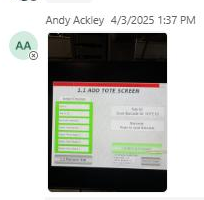

| Procedure ID | proc_hospital_hmi_lane_ui_fault_acknowledge_retry_check_v1 |
|---|---|
| Title | Hospital HMI / lane UI fault acknowledge-and-retry check |
| Procedure Type | recovery |
| Primary Role | operator |
| Support Safe | Yes |
| Capability Tags | hospital_diversion |
| Access Surface | hospital_hmi |
| Audience Roles | operator, L2_support |
| Failure Pattern Tags | system_fault |
| Validation Status | needs_sme_review |
| Merge Status | source_finalized |
Use the Hospital HMI / lane UI at UPS Haslet TX (TXRTH) to acknowledge a displayed fault, retry the operation without unplugging the Hospital HMI / lane UI, confirm that the affected tote is tote 28, and verify that the site reports the condition as all good.
Use this Hospital HMI / lane UI check when the Hospital HMI / lane UI displays a fault associated with a hospital-station tote and an acknowledge-and-retry response is appropriate.

Responsible role: operator
Instruction:
Open the Hospital HMI / lane UI and inspect the live station screen for the reported fault. Do not unplug the Hospital HMI / lane UI.
Expected result:
The reported fault is visible on the Hospital HMI / lane UI and the live screen is available for interaction.
Stop or Escalate If:
Responsible role: operator
Instruction:
On the Hospital HMI / lane UI, select the acknowledge control and retry the operation. Do not unplug the Hospital HMI / lane UI.
Expected result:
The Hospital HMI / lane UI accepts the acknowledgement and the operation enters a retry state rather than remaining blocked by the same displayed fault.
Stop or Escalate If:
Responsible role: operator
Instruction:
On the Hospital HMI / lane UI and with the site contact, confirm that the tote at the hospital station is tote 28 and verify that the site reports the condition as all good.
Expected result:
The tote at the hospital station is confirmed as tote 28 and the site reports that everything is good.
Stop or Escalate If: